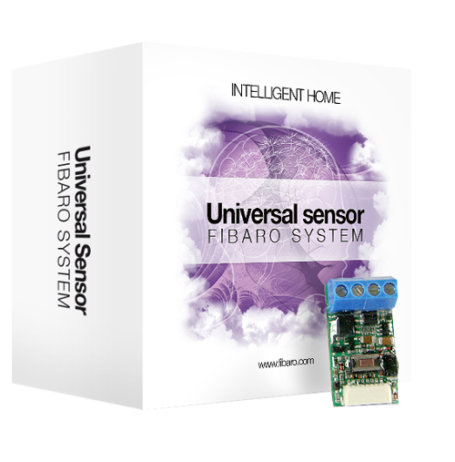
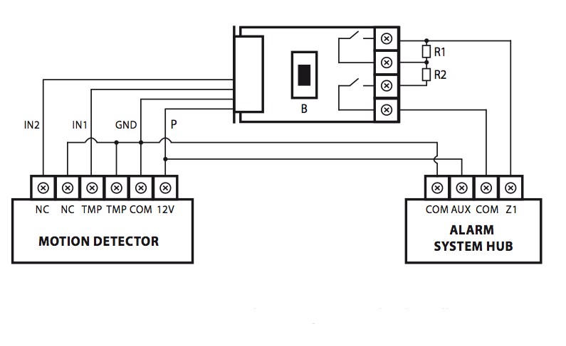
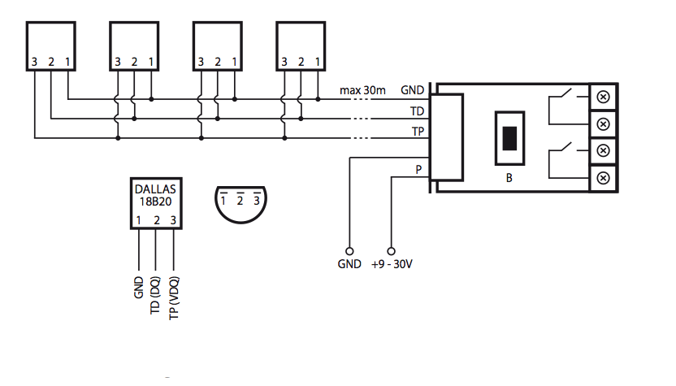
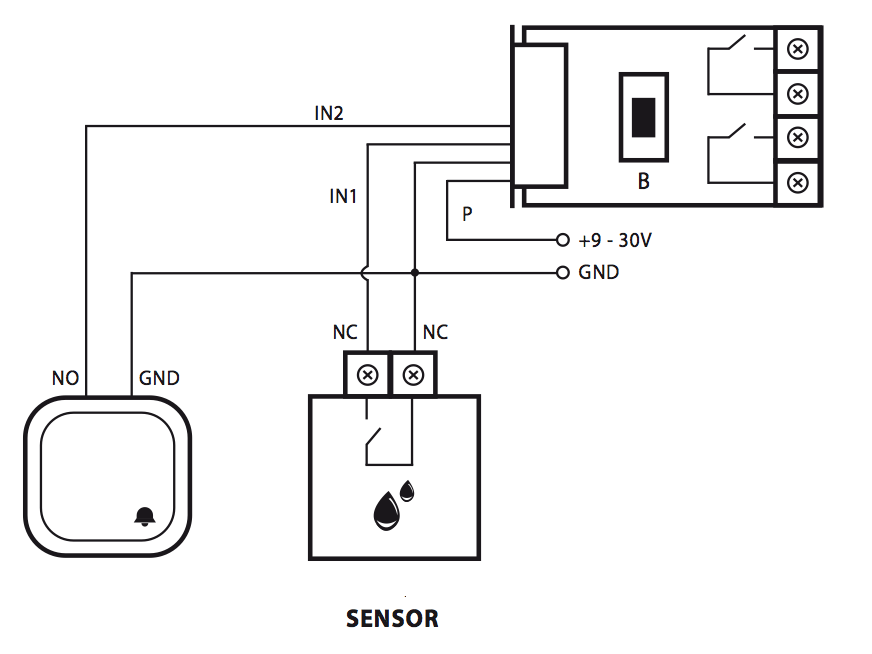

FIB_FGBS-001
Firmware Version : 3.49 |
 |
Quick Start
A This device is a Z-Wave Actor. Tripple Click the 'B' Button on the device confirms the inclusion and exclusion.
Please refer to the chapters below for detailed information about all aspects of the products usage.
What is Z-Wave?
This device is equipped with wireless communication complying to the Z-Wave standard. Z-Wave is the international standard for wireless communication in smart homes and buildings. It is using the frequency of 868.42 MHz to realize a very stable and secure communication. Each message is reconfirmed (two-way communication) and every mains powered node can act as a repeater for other nodes (meshed network) in case the receiver is not in direct wireless range of the transmitter.
Z-Wave differentiates between Controllers and Slaves. Slaves are either sensors (S) transmitting metered or measured data or actuators (A) capable to execute an action. Controllers are either static mains powered controllers (C) also referred to as gateways or mobile battery operated remote controls (R). This results in a number of possible communication patterns within a Z-Wave network that are partly or completely supported by a specific device.

- Controllers control actuators
- Actuators report change of status back to controller
- Sensors report change of status of measured values to controller
- Sensors directly control actuators
- Actuators control other actuators
- Remote controls send signals to static controllers to trigger scenes or other actions
- Remote controls control other actuators.
There are two different role a controller can have. There is always one single primary controller that is managing the network and including/excluding devices. The controller may have other functions - like control buttons - as well. All other controllers don't manage the network itself but can control other devices. They are called secondary controllers. The image also shows that its not possible to operate a sensor just from a remote control. Sensors only communicate with static controllers.
Product description
This universal Z-Wave sensor is designed to improve electronic devices with on/off switches or analog outputs by connecting them to a wireless Z-Wave network. The device can service two binary inputs and up to 4 DS18B20 temperature probes. The device can also control up to two external digital inputs (up to 150 mA). The sensor is designed to be included into the housing of another device and to be powered by this device with an input power between 9 and 30 V DC.
Before Device is installed
Please read carefully the enclosed user manual before installation of the radio-actuator, in order to ensure an error-free functioning.
ATTENTION: only authorized technicians under consideration of the country-specific installation guidelines/norms may do works with 230 Volt mains power. Prior to the assembly of the product, the voltage network has to be switched off and ensured against re-switching.
The product is permitted only for proper use as specified in the user manual. Any kind of guarantee claim has to be forfeited if changes, modifications or painting are undertaken. The product must be checked for damages immediately after unpacking. In the case of damages, the product must not be operated in any case. If a danger-free operation of the equipment cannot be assured, the voltage supply has to be interrupted immediately and the equipment has to be protected from unintended operation.
Installation Guidelines
 Explanation of the cable markings
- P (POWER), power supply cable, red
- GND (Ground), ground cable, blue
- OUT1, output No 1, assigned to input IN1
- OUT2, output No 2, assigned to input IN2
- TP (TEMP_POWER), power supply cable to the DS18B20 temperature sensor, brown
- TD (TEMP_DATA), signal cable to the DS18B20 temperature sensors, white
- ANT, antenna, black
- OUT1, output no 1 - assigned to input IN1
- OUT2, output no 2 - assigned to input IN2
- B, maintenance button

The external temperature sensors DS18B20 are connected to the device as shown on this picture. The subsequent image shows how to connect such an external switch or an external sensor to the terminals.
Behavior within the Z-Wave network
I On factory default the device does not belong to any Z-Wave network. The device needs to join an existing wireless network to communicate with the devices of this network. This process is called Inclusion. Devices can also leave a network. This process is called Exclusion. Both processes are initiated by the primary controller of the Z-Wave network. This controller will be turned into exclusion respective inclusion mode. Please refer to your primary controllers manual on how to turn your controller into inclusion or exclusion mode. Only if the primary controller is in inclusion or exclusion mode, this device can join or leave the network. Leaving the network - i.e. being excluded - sets the device back to factory default.
If the device already belongs to a network, follow the exclusion process before including it in your network. Otherwise inclusion of this device will fail. If the controller being included was a primary controller, it has to be reset first.
Tripple Click the 'B' Button on the device confirms inclusion and exclusion.
Operating the device
Node Information Frame
NI The Node Information Frame is the business card of a Z-Wave device. It contains information about the device type and the technical capabilities. The inclusion and exclusion of the device is confirmed by sending out a Node Information Frame. Beside this it may be needed for certain network operations to send out a Node Information Frame.
Tripple Click the 'B' Button on the device sends out a Node Information Frame.
Associations
A Z-Wave devices control other Z-Wave devices. The relationship between one device controlling another device is called association. In order to control a different device, the controlling device needs to maintain a list of devices that will receive controlling commands. These lists are called association groups and they are always related to certain events (e.g. button pressed, sensor triggers, ...). In case the event happens all devices stored in the respective association group will receive a common wireless command.
Association Groups:
| 1 | Input IN1 (max. nodes in group: 1) |
| 2 | Input IN2 (max. nodes in group: 5) |
| 3 | reports device status (max. nodes in group: 5) |
Configuration Parameters
Z-Wave products are supposed to work out of the box after inclusion, however certain configuration can adapt the function better to user needs or unlock further enhanced features.
IMPORTANT: Controllers may only allow to configure signed values. In order to set values in the range 128 … 255 the value sent in the application shall be the desired value minus 256. For example: to set a parameter to 200 it may be needed to set a value of 200 minus 256 = minus 56. In case of two byte value the same logic applies: Values greater than 32768 may needed to be given as negative values too.
| Value | Description |
|---|---|
| 0 — 32000 | seconds (Default 0) |
| Value | Description |
|---|---|
| 0 — 32000 | seconds (Default 0) |
| Value | Description |
|---|---|
| 0 | INPUT_NO (Normal Open) (Default) |
| 1 | INPUT_NC (Normal Close) |
| 2 | INPUT_MONOSTABLE (Monostabil) |
| 3 | INPUT_BISTABLE (bistabil) |
| Value | Description |
|---|---|
| 0 | INPUT_NO (Normal Open) (Default) |
| 1 | INPUT_NC (Normal Close) |
| 2 | INPUT_MONOSTABLE (Monostabil) |
| 3 | INPUT_BISTABLE (bistabil) |
| Value | Description |
|---|---|
| 0 | ALARM GENERIC frame |
| 1 | ALARM SMOKE frame |
| 2 | ALARM CO frame |
| 3 | ALARM CO2 frame |
| 4 | ALARM HEAT frame |
| 5 | ALARM WATER frame |
| 255 | Control frame BASIC_SET (Default) |
| Value | Description |
|---|---|
| 0 | ALARM GENERIC frame |
| 1 | ALARM SMOKE frame |
| 2 | ALARM CO frame |
| 3 | ALARM CO2 frame |
| 4 | ALARM HEAT frame |
| 5 | ALARM WATER frame |
| 255 | Control frame BASIC_SET (Default) |
| Value | Description |
|---|---|
| 1 — 99 | Dimming level |
| 255 | Turn On (Default) |
| Value | Description |
|---|---|
| 1 — 99 | Dimming level |
| 255 | Turn On (Default) |
| Value | Description |
|---|---|
| 0 | information is sent to group 1 and 2 (Default) |
| 1 | information is not sent for group 2 but sent for group 1 |
| 2 | information is not sent for group 1 but sent for group 2 |
| 3 | information is not sent |
| Value | Description |
|---|---|
| 0 — 255 | seconds (Default 20) |
| Value | Description |
|---|---|
| 0 — 255 | 1/16 Kelvin (Default 8) |
| Value | Description |
|---|---|
| 0 | IN1 and IN2 Broadcast mode inactive (Default) |
| 1 | IN1 broadcast mode active, IN2 broadcast mode inactive |
| 2 | IN1 broadcast mode inactive, IN2 broadcast mode active |
| 3 | IN1 and IN2 broadcast mode active |
| Value | Description |
|---|---|
| 0 | functionality deactivated (Default) |
| 1 | functionality activated |
Command Classes
Supported Command Classes- Multi Channel (version 2)
- Basic (version 1)
- Binary Switch (version 1)
- Version (version 1)
- Multi Channel Association (version 2)
- Binary Sensor (version 1)
- Multilevel Sensor (version 1)
- Manufacturer Specific (version 1)
- Association (version 2)
Technical Data
| IP Rating | 20 |
| Explorer Frame Support | Yes |
| SDK | 4.53 |
| Device Type | Slave with routing capabilities |
| Generic Device Class | Binary Sensor |
| Specific Device Class | Routing Binary Sensor |
| Routing | Yes |
| FLiRS | No |
| Firmware Version | 3.49 |
Explanation of Z-Wave specific terms
- Controller — is a Z-Wave device with capabilities to manage the network. Controllers are typically Gateways, Remote Controls or battery operated wall controllers.
- Slave — is a Z-Wave device without capabilities to manage the network. Slaves can be sensors, actuators and even remote controls.
- Primary Controller — is the central organizer of the network. It must be a controller. There can be only one primary controller in a Z-Wave network.
- Inclusion — is the process of bringing new Z-Wave devices into a network.
- Exclusion — is the process of removing Z-Wave devices from the network.
- Association — is a control relationship between a controlling device and a controlled device.
- Wakeup Notification — is a special wireless message issued by a Z-Wave device to annonces that is is able to communicate.
- Node Information Frame — is a special wireless message issued by a Z_Wave device to announce its capabilities and functions.
Disposal Guidelines
The product does not contain hazardous chemicals.
Do not dispose of electrical appliances as unsorted municipal waste, use separate collection facilities. Contact your local government for information regarding the collection systems available. If electrical appliances are disposed of in landfills or dumps, hazardous substances can leak into the groundwater and get into the food chain, damaging your health and well-being.